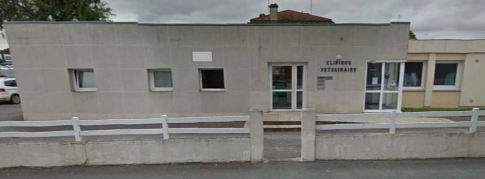

Stage en entreprise
J'ai réalisé en troisième un stage d'observation afin de découvrir le monde de l'entreprise et le métier qui m'intéressait le plus à ce moment, c'est à dire vétérinaire. Bien que je ne souhaite plus m'orienter vers cette voie, ce stage m'a permis de d'apprendre beaucoup d'informations et de techniques qui m'étaient totalement inconnues, j'en garde de très bon souvenirs. Vous pouvez retrouver mon rapport de stage ici.